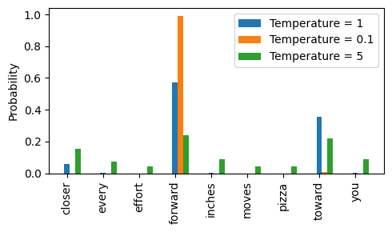

剖析LLM的解码策略-大模型炼丹术(六)
在使用训练好的LLM进行自回归预测下一个token时，我们会选择预测序列中最后一个token对应的预测tensor，作为解码操作的对象。
1 | # 获取模型的预测结果 |
此时的logit就是用于解码的tensor，batch中的每一个都对应词汇表长度大小vocab_size的一个向量。
如何对该向量进行解码，得到要预测的下一个单词呢？本文介绍几种不同的解码策略。
一、贪心解码
我们之前的解码策略是直接给logit应用softmax函数，然后使用argmax取概率值最大的数值对应的索引作为预测的下一个token ID，最后根据token ID在词汇表中查找得到预测的下一个单词：
1 | next_token = torch.argmax(logit, dim=-1) # 选择最大值对应的索引 |
这其实就是贪心解码策略，这种方式确定性强，计算高效，但容易陷入重复模式，生成文本单调，因为模型总是选择概率值最大的。
二、温度缩放+采样
这种解码策略分为两步：首先用温度系数来控制生成的随机性，然后进行概率采样。
- 第一步、温度缩放：将logit除以一个温度系数，得到缩放后的logit，然后应用softmax将其归一化成概率分布
- 第二步、概率采样：使用
torch.multinomial采样得到预测token。其内部原理如下：
1）计算累积概率分布，比如对于probs=[0.1, 0.3, 0.4, 0.2]，累积概率分布为：CDF=[0.1, 0.4, 0.8, 1.0]，
这意味着：2）生成一个(0,1]之间的随机数（如果num_samples=1，生成1个随机数），比如rand=0.351
2
3
4采样值落在 [0.0, 0.1] → 选 索引 0
采样值落在 (0.1, 0.4] → 选 索引 1
采样值落在 (0.4, 0.8] → 选 索引 2
采样值落在 (0.8, 1.0] → 选 索引 3
3）rand = 0.35落在 CDF=[0.1, 0.4, 0.8, 1.0] 的 索引 1 处，所以最终返回的采样索引是1。
代码实现如下：
1 | import torch.nn.functional as F |
现在，让我们用一个例子来直观感受一下这种解码策略。
假设使用tokenizer得到的词汇表vocab长度为9，如下：
1 | vocab = { |
假设模型已经预测的下一个token的logit如下：
1 | next_token_logits = torch.tensor( |
使用不同的温度缩放系数对logit进行缩放，并进行可视化展示：
1 | def softmax_with_temperature(logits, temperature): |

可以看到，当温度值为1时，概率分布保持不变；当温度降低至0.1 时，forward以外的所有备选项的概率几乎降为0，此时进行概率采样时，几乎必然选择forward；而当温度升高到5时，多个备选项的概率趋于相近，使得采样结果更加随机。这正是温度缩放的作用：降低温度增强确定性，提高温度提升多样性。
三、Tok-k采样
上述的温度缩放+采样策略，通过增大温度缩放系数可以提升生成结果的多样性。但是，这会导致某些不符合逻辑的token被采样，从而破坏生成结果。
为了解决这一问题，我们可以把要采样的备选项token按照概率值从大到小排序，只取前k个作为采样对象，这便是Tok-k采样的解码策略。
Top-k采样是一种控制生成文本质量的解码策略，它的核心思想是：
只在最高概率的k个token中进行采样，忽略其他低概率token，从而提高生成文本的连贯性和合理性。
1 | def top_k_sampling(logits, k=10): |
四、Top-k+温度缩放+采样
在执行完Top-k采样后，再执行温度系数缩放+采样的策略，直接上代码：
1 | def generate(model, idx, max_new_tokens, context_size, temperature=0.0, top_k=None, eos_id=None): |
五、Top-p采样
Top-p是一种改进的文本生成采样方法，与Top-k采样相比，它不限制候选token数量，而是动态选择概率总和达到p（累积概率阈值）的token进行采样。
Top-p采样的步骤如下：
1 | 1.先对所有logits进行softmax归一化，得到概率probs。 |
相应代码如下：
1 | def top_p_sampling(logits, top_p=0.9): |
六、Top-k + Top-p + 温度缩放 + 采样
在LLM进行自回归预测时，如何从logits（未归一化的预测值）中采样下一个token直接影响文本的流畅性、创造力和稳定性。
这里，我们结合上面所讲的温度缩放、Top-k采样和Top-p采样，实现一个完整的 高质量文本生成策略。
1 | def sample_next_token(logits, temperature=1.0, top_k=None, top_p=None): |
在本文的最后，我们对上面介绍的LLM解码策略总结如下表：
| 解码策略 | 作用 | 适用场景 | 局限性 | 代码示例 |
|——————————|—————————————————-|———————————-|————————————|————————————————–|
| Greedy Search | 直接选择概率最高的 token 作为下一个输出，生成结果确定。 | 需要高确定性的任务，如机器翻译、问答系统 | 容易陷入局部最优，生成的文本缺乏多样性，可能重复。 | idx_next = torch.argmax(logits, dim=-1, keepdim=True) |
| Top-k Sampling | 只从 k 个最可能的候选中随机选择下一个 token。 | 用于生成更具创意和多样性的文本 | 可能产生语法不合理的句子，但能增加多样性。 | top_logits, _ = torch.topk(logits, top_k)
logits = torch.where(logits < min_val, torch.tensor(float("-inf")).to(logits.device), logits)
idx_next = torch.multinomial(probs, num_samples=1) |
| Top-p Sampling | 使用累积概率 p 进行采样，保证概率总和不超过 p。 | 生成更加多样且合理的文本 | 计算复杂度较高，但能更好控制多样性和连贯性。 | sorted_logits, sorted_indices = torch.sort(logits, descending=True)
cumulative_probs = torch.cumsum(F.softmax(sorted_logits, dim=-1), dim=-1)
top_p_mask = cumulative_probs <= p
idx_next = torch.multinomial(probs, num_samples=1) |
| Temperature Sampling | 通过缩放 logits，控制生成的文本多样性。低温度时输出更确定，高温度时生成更多样本。 | 需要控制生成多样性或随机性的任务 | 温度过低可能导致输出单一，过高则可能生成无意义的文本。 | logits = logits / temperature
probs = torch.softmax(logits, dim=-1)
idx_next = torch.multinomial(probs, num_samples=1) |
| Combination (Top-k + Temperature) | 结合 Top-k 和 Temperature，先筛选候选中的前 k 个，再根据温度调节概率分布。 | 保持生成文本的多样性，同时避免生成过于随机的文本。 | 可能生成不太连贯的文本，需要适度调节参数。 | top_logits, _ = torch.topk(logits, top_k)
logits = torch.where(logits < min_val, torch.tensor(float("-inf")).to(logits.device), logits)
logits = logits / temperature
probs = torch.softmax(logits, dim=-1)
idx_next = torch.multinomial(probs, num_samples=1) |
| Combination (Top-p + Temperature) | 结合 Top-p 和 Temperature，先筛选累计概率小于 p 的 token，再进行温度缩放。 | 更好地控制文本生成的多样性和合理性，避免极端的随机性。 | 可能导致生成的文本过于保守，丧失创意。 | sorted_logits, sorted_indices = torch.sort(logits, descending=True)
cumulative_probs = torch.cumsum(F.softmax(sorted_logits, dim=-1), dim=-1)
top_p_mask = cumulative_probs <= p
logits = logits / temperature
probs = torch.softmax(logits, dim=-1)
idx_next = torch.multinomial(probs, num_samples=1) |
| Combination (Top-k + Top-p + Temperature) | 结合 Top-k、Top-p 和 Temperature，先筛选前 k 个候选、然后选择累计概率不超过 p 的候选，再使用温度调整概率分布。 | 能够在增加多样性的同时保证生成的文本合乎逻辑且具有较高的质量。 | 需要仔细调整 k、p 和温度，以平衡生成的多样性和合理性。 | top_logits, _ = torch.topk(logits, top_k)
logits = torch.where(logits < min_val, torch.tensor(float("-inf")).to(logits.device), logits)
sorted_logits, sorted_indices = torch.sort(logits, descending=True)
cumulative_probs = torch.cumsum(F.softmax(sorted_logits, dim=-1), dim=-1)
top_p_mask = cumulative_probs <= p
logits = logits / temperature
probs = torch.softmax(logits, dim=-1)
idx_next = torch.multinomial(probs, num_samples=1) |